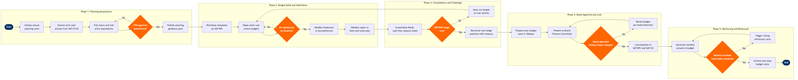

Financial Planning & Budgeting
Corporate Support Functions › Finance & Accounting · 19 L4 steps · 5 phases · 5 decision gates · Updated 2026-03-19 21:40
📊
Process Flow Diagram (BPMN)

📋
L4 Process Steps
| Step | Step Name | Role / Swim Lane | System | Input | Output | KPI | Dec? | Exc? |
|---|---|---|---|---|---|---|---|---|
Phase 1 1.1 |
Initiate annual planning cycle in SAP S/4HANA | FP&A Director | SAP S/4HANA Finance (FI/CO) | Board-approved strategic plan, prior-year close confirmation | Planning calendar with milestones and owner assignments | Planning cycle launched ≥12 weeks before fiscal year-end | N | N |
| 1.2 | Extract prior-year actuals from SAP FI/CO | Financial Controller | SAP S/4HANA Finance (FI/CO) | Year-end close completion flag in SAP | Actuals data set by cost centre, profit centre, and GL account | Actuals extraction completed within 3 business days of year-end close | N | Y |
| 1.3 | Pull macro & fuel price assumptions | Treasury Analyst | Bloomberg Terminal | Spot fuel prices, FX forwards, GDP and CPI consensus forecasts | Approved macro assumption set (fuel, FX, inflation) for planning year | Fuel price assumption reviewed against IATA Jet Fuel Monitor within ±5% of market consensus | N | N |
| 1.4 | CFO review and approval of planning assumptions | CFO | SAP S/4HANA Finance (FI/CO) | Macro assumption pack from Treasury, strategic volume targets from Network Planning | Approved assumption sign-off memo published to all budget owners | Assumptions approved and published within 5 business days of Treasury submission | Y | N |
Phase 2 2.1 |
Distribute budget templates via SAP BPC | FP&A Manager | SAP BPC (Business Planning & Consolidation) | Approved planning assumptions, prior-year actuals, approved headcount baseline | Pre-populated budget input templates distributed to 40+ cost centre managers | Templates distributed within 2 business days of assumption approval | N | Y |
| 2.2 | Departments enter cost centre budgets in SAP BPC | Cost Centre Manager | SAP BPC (Business Planning & Consolidation) | Distributed budget templates, departmental headcount plan | Departmental P&L budget and headcount plan submitted in SAP BPC | On-time submission rate ≥90% of cost centres by stated deadline | N | Y |
| 2.3 | Validate completeness of departmental submissions | FP&A Analyst | SAP BPC (Business Planning & Consolidation) | All departmental budget submissions in SAP BPC | Submission completeness report; escalation notices to overdue cost centres | 100% submission completeness achieved before consolidation window opens | Y | N |
| 2.4 | Validate headcount budget vs SAP SuccessFactors plan | HR Finance Partner | SAP SuccessFactors | Departmental headcount submissions, approved establishment file from SuccessFactors | Reconciled headcount budget with variance commentary for exceptions >5 FTE | Headcount variance between BPC submission and SuccessFactors plan ≤2% at department level | N | Y |
| 2.5 | Validate capex requests against fleet and route plan | Capital Planning Manager | SAP S/4HANA Finance (FI/CO) | Departmental capex bids, Amadeus SkyMAX fleet assignment output, Boeing delivery schedule | Approved capex budget list with project codes assigned in SAP CO | Capex budget total reconciled to strategic fleet plan within ±2% variance | N | Y |
Phase 3 3.1 |
Consolidate full P&L, cash flow, and balance sheet | FP&A Director | SAP BPC (Business Planning & Consolidation) | All validated departmental budgets and capex lists | Consolidated airline-level budget P&L, cash flow statement, and balance sheet | Consolidation completed within 3 business days of submission deadline | N | Y |
| 3.2 | Assess consolidated budget vs EBITDAR target | CFO | SAP BPC (Business Planning & Consolidation) | Consolidated budget P&L, Board-approved EBITDAR target range | Gap analysis report: budget EBITDAR vs target with sensitivity scenarios | EBITDAR margin target ≥15% on consolidated airline revenue | Y | N |
| 3.3 | Issue cut targets and iterate with cost centres | FP&A Manager | SAP BPC (Business Planning & Consolidation) | EBITDAR gap analysis, CFO direction on cost reduction quantum | Revised departmental budget targets distributed; resubmission timeline set | Resubmission cycle completed within 5 business days of cut target issuance | N | N |
| 3.4 | Reconcile fuel hedge positions with treasury model | Treasury Analyst | Bloomberg Terminal | Confirmed fuel hedge book from Treasury, consolidated fuel volume budget from Operations | Hedged and unhedged fuel cost budget with sensitivity at ±10% fuel price | Hedge coverage ratio target ≥50% of planned fuel consumption for next 12 months | N | Y |
Phase 4 4.1 |
Prepare executive budget pack for Board presentation | FP&A Director | Tableau | Approved consolidated budget, sensitivity scenarios, prior-year comparison | Board budget pack: executive summary, key metrics dashboard, risk narrative | Board pack delivered ≥5 business days before Finance Committee meeting | N | N |
| 4.2 | Present budget to Board Finance Committee | CFO | Tableau | Executive budget pack, audit committee pre-read, external auditor sign-off | Board meeting minutes with approval resolution or revision instructions | Board approval obtained at first presentation in ≥75% of annual cycles | Y | N |
| 4.3 | Lock approved budget baseline in SAP BPC and SAP CO | Financial Controller | SAP BPC (Business Planning & Consolidation) | Board approval resolution, final budget version in SAP BPC | Locked budget version in SAP BPC; approved cost centre budgets released to SAP CO for actuals comparison | Budget locked and released to SAP CO within 3 business days of Board approval | N | Y |
Phase 5 5.1 |
Generate monthly actuals vs budget variance report | FP&A Analyst | SAP S/4HANA Finance (FI/CO) | Monthly close actuals from SAP FI, locked budget baseline from SAP BPC | Monthly management accounts pack with variance commentary by cost centre | Management accounts published within 5 business days of month-end close | N | N |
| 5.2 | Assess variance against materiality threshold | FP&A Director | SAP BPC (Business Planning & Consolidation) | Monthly variance report, materiality threshold (±5% revenue or ±$2M EBITDAR) | Variance assessment decision: maintain budget or trigger rolling reforecast | Reforecast trigger decision made within 2 business days of management accounts publication | Y | N |
| 5.3 | Execute rolling reforecast and update SAP BPC | FP&A Manager | SAP BPC (Business Planning & Consolidation) | Latest actuals, revised macro assumptions, updated capacity plan from Amadeus SkyCAST | Updated 12-month rolling forecast published in SAP BPC; variance to original budget flagged | Rolling reforecast cycle completed within 10 business days of trigger; forecast accuracy ≤3% vs subsequent actuals | N | Y |
📋